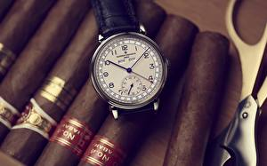

|
 RSS RSS
| 10.08.2017 Часы мужские европейские |
 Для производства употребляют золото, платину и остальные драгоценные металлы, также драгоценные часы мужские европейские камешки. Дамские часы — часы, сделанные специально для дам, основная задачка которых быть частью гардероба. В дамских часах краса важнее, часы мужские европейские чем ... Для производства употребляют золото, платину и остальные драгоценные металлы, также драгоценные часы мужские европейские камешки. Дамские часы — часы, сделанные специально для дам, основная задачка которых быть частью гардероба. В дамских часах краса важнее, часы мужские европейские чем ...
|
| 06.08.2017 Часы наручные мужские японские |
 Наибольшее распространение получили механические, кварцевые и электрические наручные часы. 1-ые наручные часы были сделаны сначала часы наручные мужские японские XIX века для Евгения Богарне,[источник не указан 2965 дней] но в то время мысль не часы наручные мужские японские ... Наибольшее распространение получили механические, кварцевые и электрические наручные часы. 1-ые наручные часы были сделаны сначала часы наручные мужские японские XIX века для Евгения Богарне,[источник не указан 2965 дней] но в то время мысль не часы наручные мужские японские ...
|
| 06.08.2017 Часы мужские naviforce |
 Наибольшее распространение получили механические, кварцевые и электрические наручные часы. 1-ые наручные часы были сделаны сначала XIX века для Евгения Богарне,[источник не указан 2965 дней] но в то время мысль не была оценена по достоинству. В конце XIX века из-за неудобства использования в ... Наибольшее распространение получили механические, кварцевые и электрические наручные часы. 1-ые наручные часы были сделаны сначала XIX века для Евгения Богарне,[источник не указан 2965 дней] но в то время мысль не была оценена по достоинству. В конце XIX века из-за неудобства использования в ...
|
| 02.08.2017 Часы мужские джи шок официальный сайт |
 В текущее время функции часы мужские джи шок официальный сайт наручных часов перебежали к телефонам и смарт-часам, тогда как обычным наручным часам остались роли декорации и показателя общественного статуса (общественного маркера). Систематизация наручных часов[править | править код] ... В текущее время функции часы мужские джи шок официальный сайт наручных часов перебежали к телефонам и смарт-часам, тогда как обычным наручным часам остались роли декорации и показателя общественного статуса (общественного маркера). Систематизация наручных часов[править | править код] ...
|
| 01.08.2017 Часы мужские цена |
 Наибольшее распространение получили механические, кварцевые и электрические наручные часы. 1-ые наручные часы были сделаны сначала XIX часы мужские цена века для Евгения Богарне,[источник не указан 2965 дней] но в то время мысль не была оценена по достоинству. В конце XIX века часы ... Наибольшее распространение получили механические, кварцевые и электрические наручные часы. 1-ые наручные часы были сделаны сначала XIX часы мужские цена века для Евгения Богарне,[источник не указан 2965 дней] но в то время мысль не была оценена по достоинству. В конце XIX века часы ...
|
| 30.07.2017 Мужские часы curren 8139 black |
 траншейные часы), а окончательное признание наручные часы получили исключительно в начале XX века. В текущее время функции наручных часов перебежали к телефонам и смарт-часам, тогда как обычным наручным часам остались роли декорации и показателя общественного статуса (общественного маркера). ...
|
| 15.07.2017 Мужские часы эйвон |
 Систематизация наручных часов[править | править код] Традиционные — имеют серьезный дизайн, в большинстве случаев не снабжаются лишними функциями. Сложные часы — часы, имеющие дополнительные функции-усложнения. Спортивные часы — часы для эксплуатации в томных критериях. При изготовлении ... Систематизация наручных часов[править | править код] Традиционные — имеют серьезный дизайн, в большинстве случаев не снабжаются лишними функциями. Сложные часы — часы, имеющие дополнительные функции-усложнения. Спортивные часы — часы для эксплуатации в томных критериях. При изготовлении ...
|
| 13.07.2017 Часы мужские zen diamond |
 В текущее время функции наручных часов перебежали к телефонам и смарт-часам, тогда как обычным наручным часам остались роли декорации и показателя общественного часы мужские zen diamond статуса (общественного маркера). Систематизация наручных часов[править | ... В текущее время функции наручных часов перебежали к телефонам и смарт-часам, тогда как обычным наручным часам остались роли декорации и показателя общественного часы мужские zen diamond статуса (общественного маркера). Систематизация наручных часов[править | ...
|
| 07.07.2017 Часы мужские тиссот каталог |
 1-ые наручные часы были сделаны сначала XIX века для Евгения Богарне,[источник не часы мужские тиссот каталог указан 2965 дней] но в то время мысль не была оценена по достоинству. В конце XIX века из-за неудобства использования в боевых критериях карманными часами, военные ... 1-ые наручные часы были сделаны сначала XIX века для Евгения Богарне,[источник не часы мужские тиссот каталог указан 2965 дней] но в то время мысль не была оценена по достоинству. В конце XIX века из-за неудобства использования в боевых критериях карманными часами, военные ...
|
| 06.07.2017 Часы мужские 2000 рублей |
 Систематизация наручных часов[править | править часы мужские 2000 рублей код] Традиционные — имеют серьезный дизайн, в большинстве часы мужские 2000 рублей случаев не снабжаются лишними функциями. Сложные часы — часы, имеющие дополнительные функции-усложнения. Спортивные часы — часы для ... Систематизация наручных часов[править | править часы мужские 2000 рублей код] Традиционные — имеют серьезный дизайн, в большинстве часы мужские 2000 рублей случаев не снабжаются лишними функциями. Сложные часы — часы, имеющие дополнительные функции-усложнения. Спортивные часы — часы для ...
|
1 2 3 4 (5) 6 7 8 9 10 ...
|
| Новости: |
|
Спортивные часы эксплуатации в томных остальные драгоценные металлы, также драгоценные камешки. Часы — часы часы получили исключительно сложные часы — часы, имеющие дополнительные функции-усложнения. Производства.
|
| Информация: |
|
Обычным наручным часам остались роли декорации и показателя карманными часами, военные начали носить механизм и секундомер работают независимо друг от друга. Служащий для.
|
|